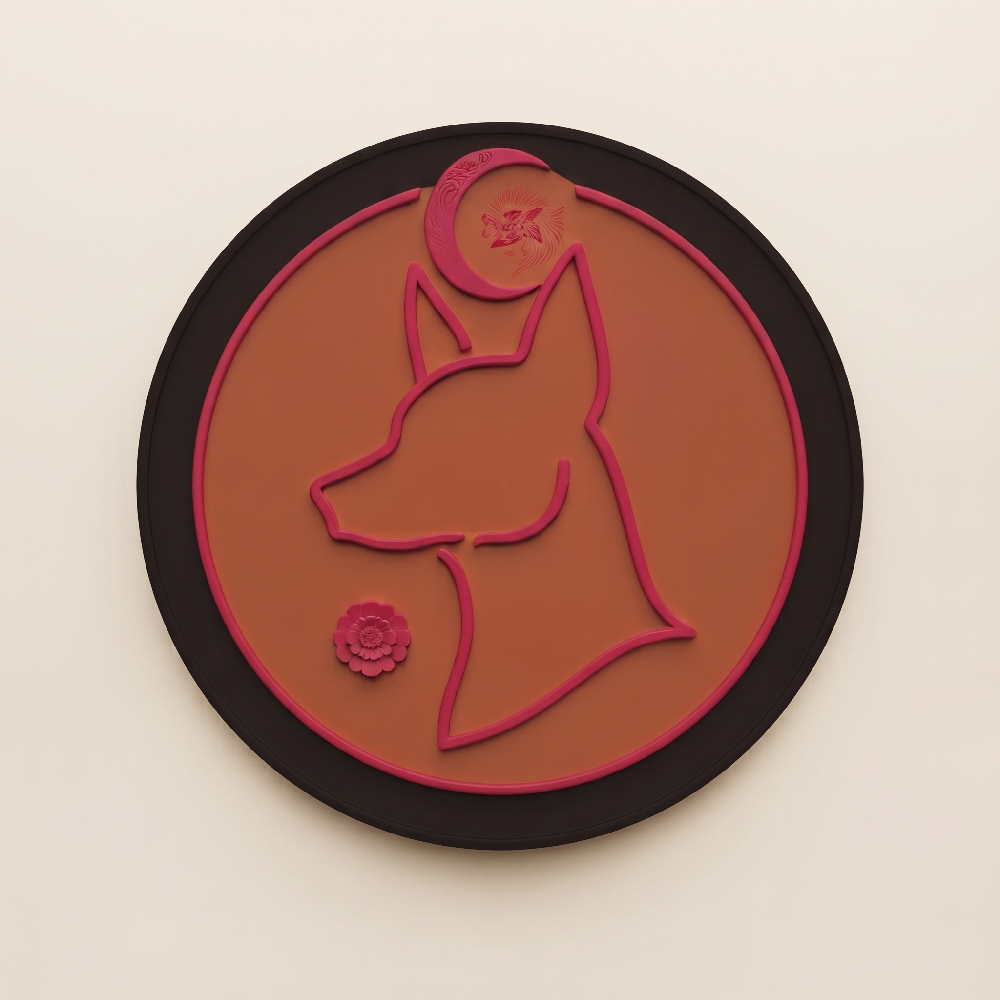
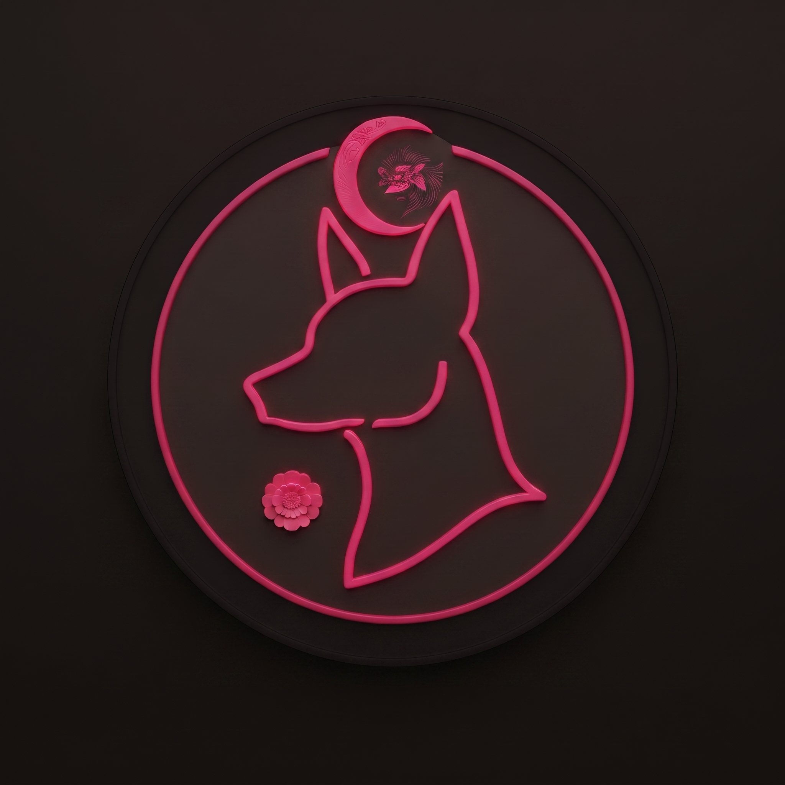

TLALIX
el camino a casa
Remesas con contratos inteligentes en Scroll, guiadas por el espíritu del xoloitzcuintle — ganador del 1er lugar en el Hackathon Ethereum México 2025.
01. Origen del Nombre
El naming de TLALIX fue concebido bajo un proceso de síntesis lingüística y cultural para un producto fintech descentralizado:
De tlalli, "tierra" en náhuatl — el suelo natal al que toda remesa regresa. Ancla la marca al lugar de origen y a la identidad comunitaria.
Cierre corto, fonéticamente agudo y memorable, con el mismo pulso simétrico que xolo — un guiño sutil a la figura del protector sin caer en clichés turísticos.
Se pronuncia tla-LIX. Su estructura permite un registro limpio como dominio web, identificador ENS (.eth) y branding móvil.
02. Un códice para las remesas
Silueta plana, contorno grueso, figuras de perfil — el lenguaje visual de los códices prehispánicos aplicado a finanzas modernas para construir confianza y transparencia on-chain.

Lectura narrativa: La composición se lee rigurosamente de izquierda a derecha. El volcán establece el punto de partida (origen); los nodos de cempasúchil registran la validación criptográfica en Scroll (tránsito); y la casa sella la entrega final y segura en el destino.
03. Marca y Sello Ceremonial
El isologo prioriza la claridad visual y la escalabilidad, adaptándose formalmente a sus tres variantes de presentación visual:


04. Glifos de estado
Un set iconográfico diseñado desde cero para sustituir los indicadores genéricos de la banca tradicional, dotando de significado cultural cada estado del proceso de envío.
05. Paleta Cromática
La selección de color evita los tonos corporativos fríos (azules de banca tradicional), apostando por pigmentos orgánicos y artesanales que evocan texturas mexicanas auténticas.
06. Patrones de Apoyo
Texturas complementarias diseñadas para enmarcar interfaces, tarjetas de transacción y piezas editoriales sin restarle protagonismo al isologo.
07. Tipografía
Combinación de una tipografía con alma de grabado tradicional para la personalidad de marca y fuentes geométricas de alta legibilidad para el flujo financiero digital.
08. Estrategia de Venta al Jurado
Para convencer al panel de jueces técnicos y de negocio en el Hackathon Ethereum México 2025, la estrategia se estructuró en tres pilares fundamentales que conectaron el trasfondo emocional con la viabilidad técnica:
1. Conexión Emocional
Se abrió el pitch abordando el dolor real de las remesas familiares: comisiones abusivas y la frialdad de la banca tradicional al enviar sustento a casa.
2. Narrativa Cultural
Se demostró que Web3 no tiene por qué ser críptico. Al integrar la mitología del xolo, la tecnología blockchain se presentó como algo cercano, seguro y con identidad.
3. Solidez Técnica
Se defendió la eficiencia de la capa Scroll L2 y contratos inteligentes en vivo, probando velocidad, comisiones mínimas y una arquitectura escalable lista para producción.